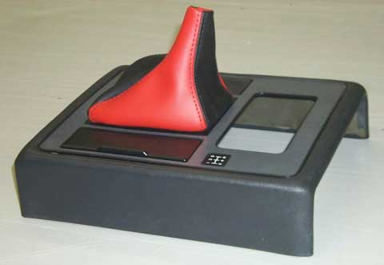
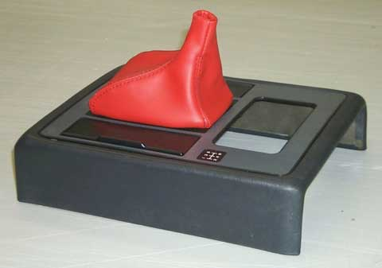

<!--
title: fierosails.com
description: 
published: true
date: 2025-10-29T20:54:53.726Z
tags: fierosails
editor: code
dateCreated: 2025-10-29T20:54:53.726Z
-->
</head>

<body bgcolor="#FFFFFF" text="#000000">
<table width="100%" border="0" cellspacing="5" cellpadding="0">
  <tr> 
    <td width="15%" height="1200" align="left" valign="top"> 
      <p>&nbsp;</p>
      <p><font face="Verdana, Arial, Helvetica, sans-serif" size="2"><a href="index.html">HOME</a></font><br>&nbsp;<br>
      
      <font face="Verdana, Arial, Helvetica, sans-serif" size="2"><a href="whats.html">What's 
        a Sail Panel?</a><br>&nbsp;<br>
        <a href="pics.html">Sail Panels</a><br>&nbsp;<br>
        <a href="decal.html">Decals</a><br>&nbsp;<br>
        <a href="boots.html">Shift Boots</a><br>&nbsp;<br>
        <a href="fierosecrets.html">Fiero Secrets</a><br>&nbsp;<br>
        <a href="bargains.html">Bargains</a><br>&nbsp;<br>
        <a href="payship.html">Payment &amp; Shipping</a><br>&nbsp;<br>
        <a href="custom.html">Custom Graphics</a><br>&nbsp;<br>
        <a href="howto.html">How to Remove &amp; Replace Sail Panels</a><br>&nbsp;<br>
        <a href="care.html">Sail Panel Care</a><br>&nbsp;<br>
        <a href="refs.html">References</a><br>&nbsp;<br>
        <a href="gallery.html">Rogue's Gallery (photos)</a><br>&nbsp;<br>
        <a href="email.html">Send Us a Note</a><br>&nbsp;<br>
        <a href="order.html">Order Form</a><br>&nbsp;<br>
        <a href="clubs.html">Fiero Clubs</a><br>&nbsp;<br>
        <a href="headlights.html">Headlight Repair</a><br>&nbsp;<br>
        <a href="belt.html">Fix That Loose Belt!</a><br>&nbsp;<br>
        <a href="paulsphotos.html">Parts for Sale</a><br>
        </font> </p>
    <td width="1%" bgcolor="#FF0000" height="1200" valign="top"></td>
    <td width="84%" align="left" valign="top">
      <left>
        <font color="red">
        <h1 align="CENTER">SHIFT BOOTS</h1>
        </font> <font size="+0" face="Courier" color="000000"> 
        <p><font face="Verdana, Arial, Helvetica, sans-serif" size="2">We now offer shift boots in color "leatherette" to coordinate with your custom 
          color scheme. Most are just $25 including shipping in the US. The version with black/white checks is $35.  Three photos below 
          are typical examples.  Colors we have:</font></p>
        <p><font face="Verdana, Arial, Helvetica, sans-serif" size="2"><br>
          Tan<br>
          Chocolate<br>
          Light Gray<br>
          Medium Gray<br>
          Dark Gray<br>
          Black<br>
          White<br>
          Two-tone combinations<br>
          Most any basic color<br>
          <br>
          <br>
          </font><font face="Verdana, Arial, Helvetica, sans-serif" size="2"><a href="images/Boot_RedBlk.jpg"></a> </font></p>
        <p><font face="Verdana, Arial, Helvetica, sans-serif" size="2"><a href="images/Boot_Red.jpg"></a> </font></p>

<p><font face="Verdana, Arial, Helvetica, sans-serif" size="2"><a href="images/Boot_Red.jpg"></a> </font></p>

        <p><font face="Verdana, Arial, Helvetica, sans-serif" size="2">Shift boots 
          do NOT include the shift console shown in the pictures! </font></p>

<p><font face="Verdana, Arial, Helvetica, sans-serif" size="2">Why is the "checkered flag" shift boot more expensive?  Well, the checks are hand-painted on white vinyl.  This is a tedious process.  (The paint is specially made for vinyl.) </font></p>


        <p><font face="Verdana, Arial, Helvetica, sans-serif" size="2">If you 
          would like a sample swatch of vinyl to verify the match with your car, 
          send a self-addressed stamped business-size envelope with a note inside 
          describing what you want <b>AND YOUR E-MAIL ADDRESS</b> to: </font></p>
        <p><font face="Verdana, Arial, Helvetica, sans-serif" size="2"><br>
          Paul McKibben<br>
          4001 Centre Court<br>
          Norcross, GA 30092<br>
          </font></p>
        <p><font face="Verdana, Arial, Helvetica, sans-serif" size="2"><b>Shift 
          boot features:</b> </font></p>
        <p> </p>
        <li> 
          <p><font face="Verdana, Arial, Helvetica, sans-serif" size="2">Shift 
            boots only for manual transmissions at this time. Boots for automatic 
            transmissions are in the works. </font></p>
        <li> 
          <p><font face="Verdana, Arial, Helvetica, sans-serif" size="2">Shift 
            boots do not include mounting rings. You will have to use your old 
            one. </font></p>
        <li> 
          <p><font face="Verdana, Arial, Helvetica, sans-serif" size="2">Shift 
            boots are for standard length shift arm. Boots for short shifters 
            are pending. </font></p>
          <p> </p>
          <p> </p>
          <p><font face="Verdana, Arial, Helvetica, sans-serif" size="2"><b>To 
            order,</b> please fill out the Order Form accessible from the menu 
            at the left. </font></p>
          <p> </p>
          <p> </p>
        
        </font> 
      </center>
      </td>
  </tr>
</table>
</body>


<!--
     FILE ARCHIVED ON 16:49:03 Apr 13, 2003 AND RETRIEVED FROM THE
     INTERNET ARCHIVE ON 23:58:58 Oct 26, 2025.
     JAVASCRIPT APPENDED BY WAYBACK MACHINE, COPYRIGHT INTERNET ARCHIVE.

     ALL OTHER CONTENT MAY ALSO BE PROTECTED BY COPYRIGHT (17 U.S.C.
     SECTION 108(a)(3)).
-->
<!--
playback timings (ms):
  captures_list: 0.455
  exclusion.robots: 0.022
  exclusion.robots.policy: 0.015
  esindex: 0.009
  cdx.remote: 19.899
  LoadShardBlock: 240.273 (3)
  PetaboxLoader3.datanode: 163.4 (4)
  PetaboxLoader3.resolve: 162.345 (2)
  load_resource: 152.526
-->